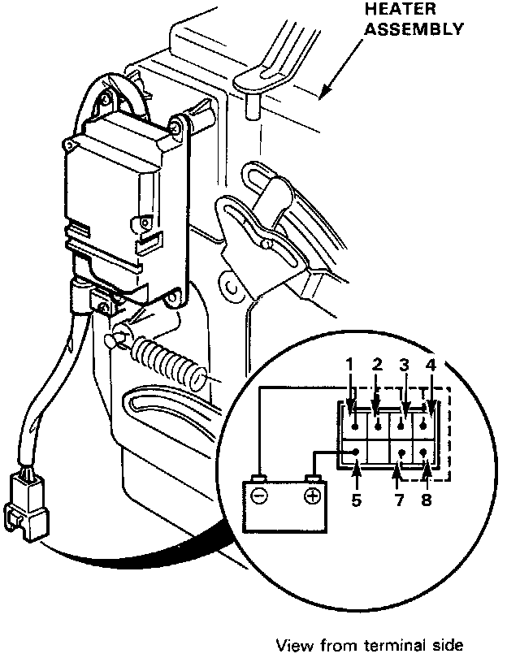

Function Control Motor Testing
Function Control Motor Testing
1. Connect the battery positive terminal to the 5 terminal of the function control motor and negative to the 1 terminal.
2. Using a jumper wire short the 1 terminal to the 2, 3, 4, 7 and 8 terminals in order.
- The motor should run each time the short circuit is made.